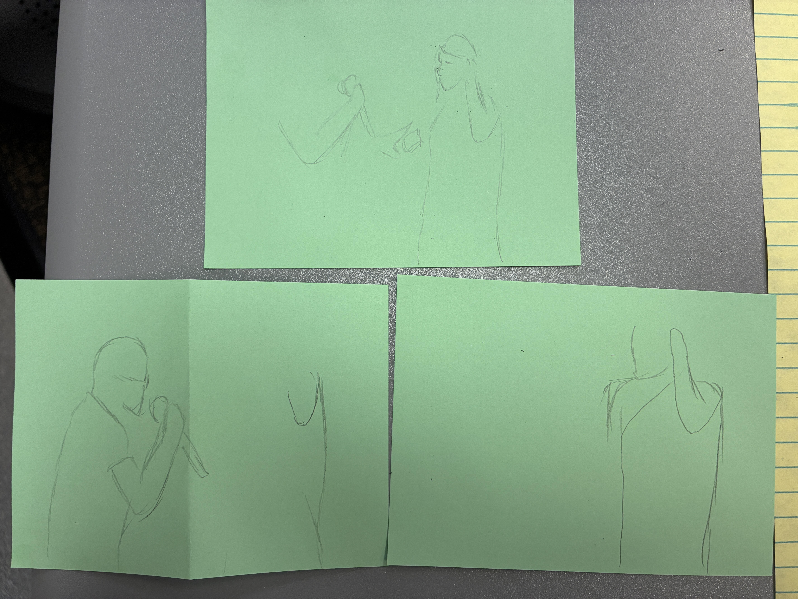

Sept. 4th: In class to give an example of Multimodal Learning is we had to draw the same picture of Talor Swift getting an award in only 2 minutes, 1 minute, and finaly 30 seconds. This was a way to test our ability to navigate a more tangible constraint of time. And in doing so we had to make choices of what we must sacarfice as to make the best drawing in 30 seconds, and in a fun way as well.
